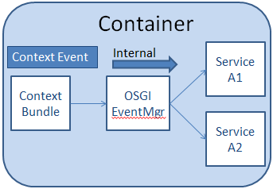

Internal Eventing (OSGi)
The internal eventing interface extends the OSGI eventing system. It is targeted at eventing between bundles running within the same Virgo container (see Figure 29). These events are not visible outside of that node, in other terms, they are not available between CSS nodes of the same CSS. As we are contained within the Virgo container, developers are free to add their own Java object types as the payload or event info.
See TestInternalEventing class for full code listing from the Git code repository.
As we are extending the OSGI EventListener, you need to add the following reference in your POM file:
<dependency>
<groupId>org.osgi</groupId>
<artifactId>org.osgi.compendium</artifactId>
<version>4.1.0</version>
<scope>provided</scope>
</dependency>

You do need a dependency injection so you should get a reference to the IEventMgr service by registering in the Bundle-context-osgi.xml and Bundle-context.xml.
In the Bundle-context-osgi.xml file, get a reference to the IEventMgr service:
<osgi:reference id="eventMgmtRef" interface="org.societies.api.osgi.event.IEventMgr" />
In the Bundle-context.xml file, ensure you set a property to receive a reference to the IEventMgr:
<bean id="ClientTester"
class="org.societies.examples.testclient.ClientTester"
depends-on="eventMgmtRef">
<property name="eventMgr" ref="eventMgmtRef"/>
</bean>
In your Virgo Plan ensure that the Event Manager Bundle (org.societies.comm.event.mgmt) is deployed:
<artifact type="bundle" name="org.societies.comm.event.mgmt" />
If needed, ensure that Communications Bundles are also deployed on your Virgo plan.
<artifact type="bundle" name="org.societies.comm.CommonLibraries"/>
<artifact type="bundle" name="org.societies.comm.xmpp.XCCommunicationMgr"/>